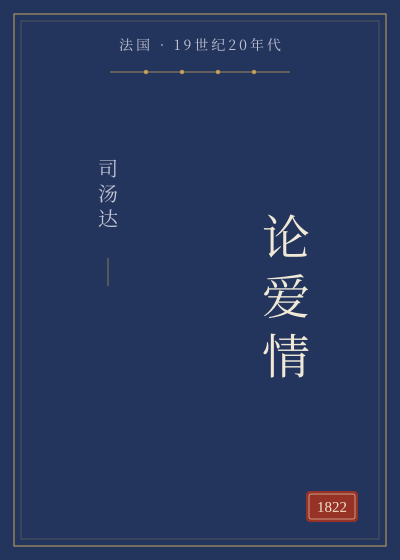
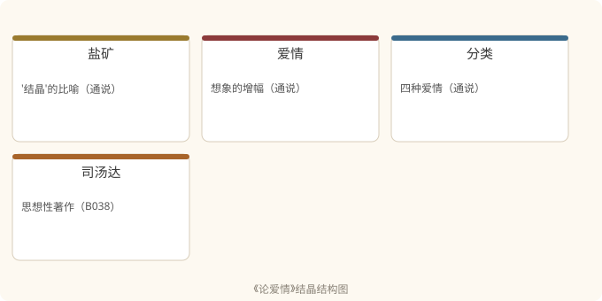

论爱情
一、基本信息
| 作者 | 司汤达 |
|---|---|
| 成书/出版 | 1822年（作者页 B038 注记：论爱情 (1822)——'结晶'理论） Stendhal — Encyclopaedia Britannica (by Victor Brombert)（百科全书） |
| 国别/地区 | 法国 |
| 时代 | 近代 · 19世纪20年代 |
| 体裁 | 论著 |
| 语言 | 法语 |

《论爱情》结晶结构图（主题·结构图）
二、创作背景
作者页（B038）注记：《红与黑》《巴马修道院》《论爱情》；B038：司汤达——'19世纪上半叶最具独创性最复杂的法国作家之一'。
题材（通说待核）：'结晶'理论（crystallization）——恋人心中的盐矿树枝比喻。
Britannica B038 口径：本作为其思想性著作（与小说并列列举）。
三、内容脉络
（通说待核——B038未载细节）爱情的诞生：萨尔茨堡盐矿的'结晶'比喻。
（通说待核）'四种爱情'的分类与'快感的原则'。
四、主要人物表
| 人物 | 身份 | 说明 |
|---|---|---|
| （论著无人物） | —— | 思想论著 |
五、主题与艺术特点
- '结晶'：想象的增幅（通说待核）。
- 浪漫爱情的解剖（B038 列举语境）。
- 幸福与激情的道德（通说待核）。
六、影响与评论
- Britannica：司汤达与《论爱情》并列（B038 作者页注记）。
Stendhal — Encyclopaedia Britannica (by Victor Brombert)（百科全书） - Britannica：'最具独创性最复杂的法国作家之一'（B038 作者级）。
Stendhal — Encyclopaedia Britannica (by Victor Brombert)（百科全书）
七、阅读建议
难点
- '结晶'概念的心理描述。
- 1820年代沙龙语境。
- 《论爱情》中译本（人民文学等——通说待核）。
- 法文原版（公有领域）。
司汤达思想侧面；与《红与黑》对读。
八、待核实
- '结晶'理论细节核对（通说）。
- 1822年出版细节待核。
- '四种爱情'分类待核。